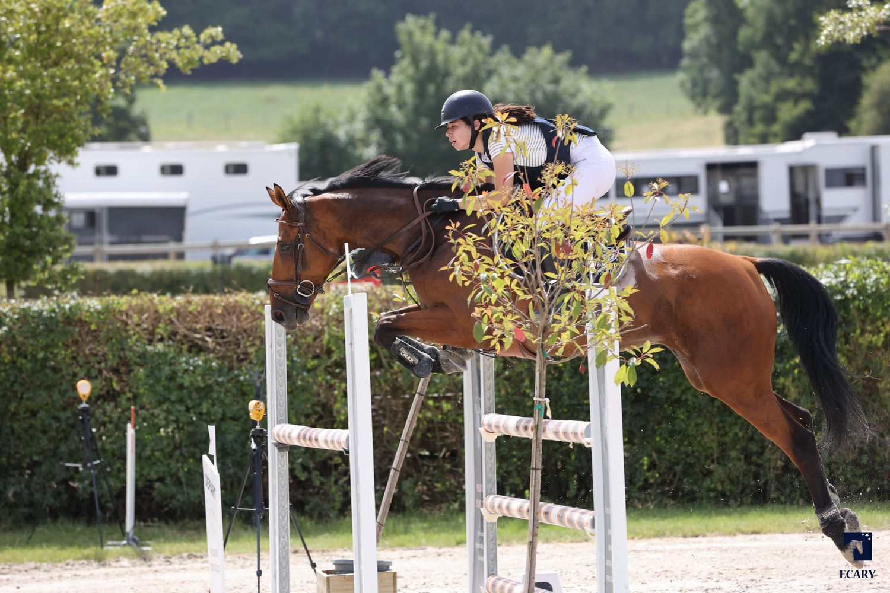
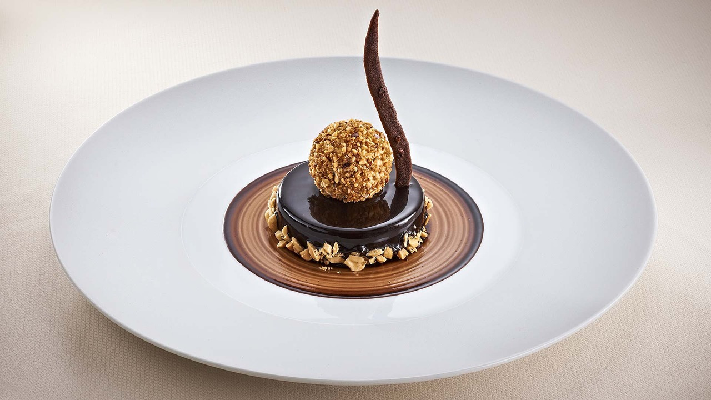
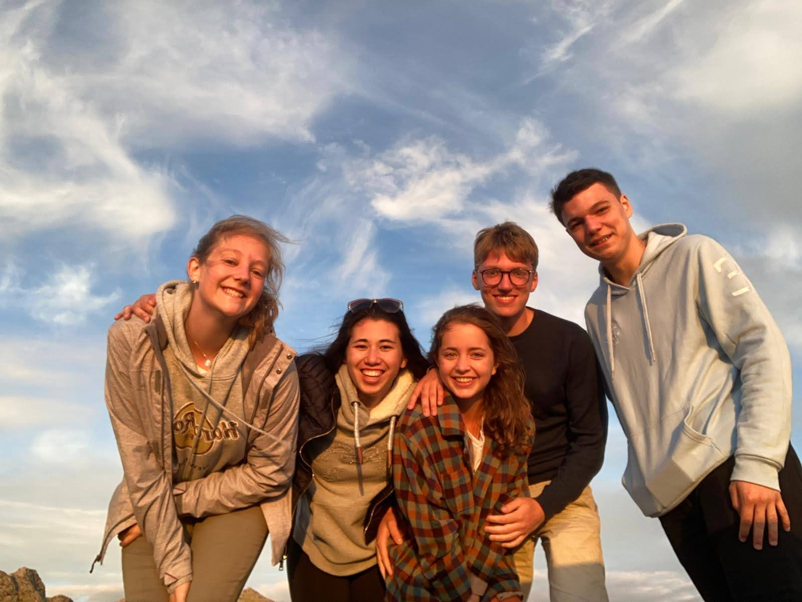
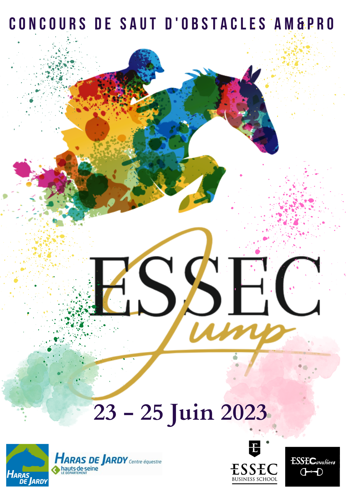

Tout d'abord, je m'appelle Ayako Bocquet. J'ai 18 ans et j'habite en région parisienne. Je suis franco japonaise et je suis née à Tokyo. Actuellement, je suis étudiante à l'ESSEC dans le programme Global BBA.
Découvre mon école!🎓Je pratique l'équitation depuis de nombreuses années, grâce à mon père qui m'a transmis cette passion. Je fais régulièrement des compétitions de saut d'obstacles avec ma jument. De plus, j'ai également un grand attrait pour l'élevage des chevaux de sport. C'est pour cela que je collabore avec mon père dans la gestion du petit élevage familial. Découvre plus en détail l'élevage de Way 🐴
La gastronomie est un domaine qui me fascine et qui m'interresse énormément. Ainsi, j'adore cuisiner et pâtisser pour ma famille et mes amis. C'est d'aileurs pour ça que j'ai intégré pendant deux mois un restaurant semi-gastronomique en Normandie, près de Deauville.
J'adore passer du temps avec mes amis pour m'amuser et partager de bons moments ensemble.
Depuis mon entrée à l'ESSEC, j'ai intégré ESSECavaliers. Dans cette association, je suis en charge d'organiser une compétition nationale d'équitation de saut d'obstacles. Mon rôle est de contacté les sponsors et de gérer la communication de l'événement.
A long terme, l'un de mes projets serait de pouvoir faire carrière dans le commerce de chevaux à l'international. Cela me permettrais ainsi d'allier à la fois ma passion et la vie professionnelle.